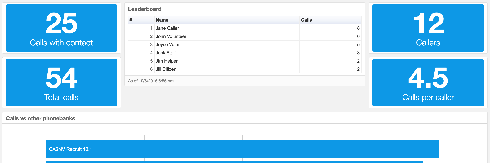

DevProgress Leaderboards
What is it?
DevProgress Leaderboard is a Chrome extension that runs on Votebuilder.com pages. Whenever the user logs in to a phone bank or completes a call, the exension sends an event to a Keen.io database. Use it to get real time stats during a phonebank, and motivate callers to compete for the top spot.
Clicking the extension button will show the user their own call count, the total calls for the phonebank, and a leaderboard (top callers and the number of calls made by each).
There's also a full page dashboard that shows the leaderboard plus counts for calls with contact, total calls, number of callers, and average calls per caller.

Get it
Install the Chrome plugin:
- go to DevProgress Leaderboard in the Chrome WebStore
- click Add to Chrome
- start calling with votebuilder.com
- click the extension addon button to see results
Questions? Want more or different stats?
Talk to us.
Built by DevProgress.us